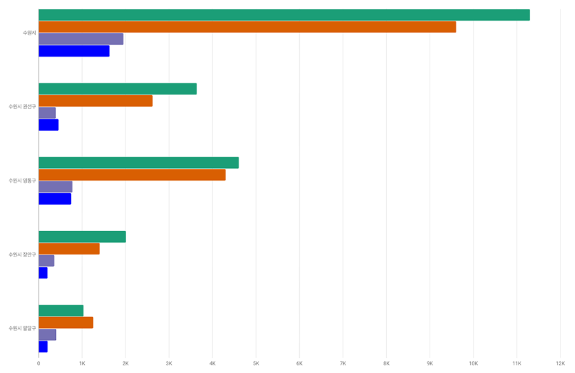

| 지역 | 합계 | 시(군)구 내 | 경기도 내 | 서울 | 기타 |
|---|---|---|---|---|---|
| 지역수원시 | 합계24,503 | 시(군)구 내11,306 | 경기도 내9,607 | 서울1,956 | 기타1,634 |
| 지역수원시 권선구 | 합계10,455 | 시(군)구 내4,661 | 경기도 내4,307 | 서울783 | 기타754 |
| 지역수원시 영통구 | 합계10,455 | 시(군)구 내4,661 | 경기도 내4,307 | 서울783 | 기타754 |
| 지역수원시 장안구 | 합계10,455 | 시(군)구 내4,661 | 경기도 내4,307 | 서울783 | 기타754 |
